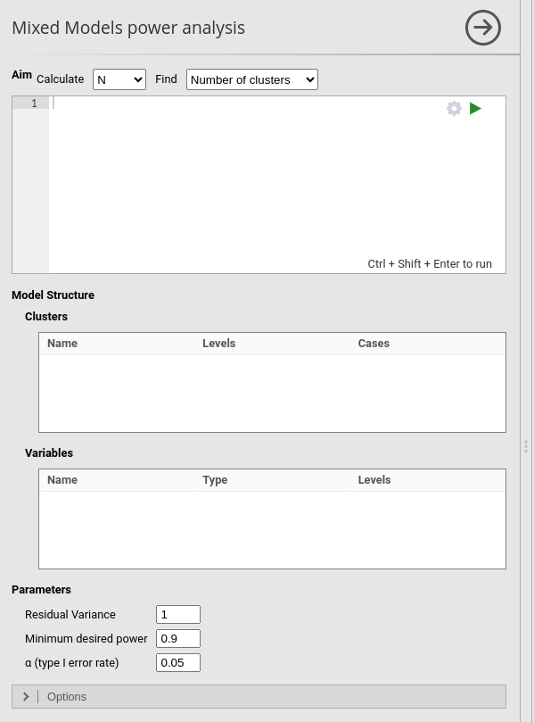
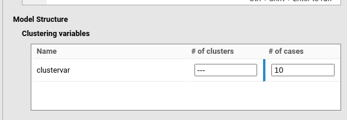
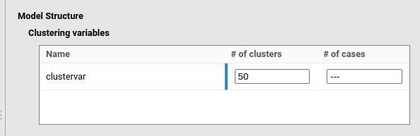
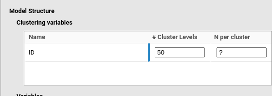
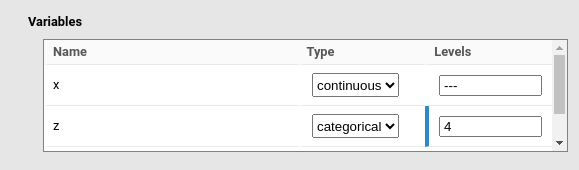

Mixed models
Power Analysis
0.7.0

Linear Mixed Models
Linear Mixed Models allows users to compute achievable
power and sample size parameters for testing coefficients in a random
coefficients linear model.
Because of the complexity and flexibility of mixed models, this
sub-module includes several features that differ from other sub-modules
of PAMLj.
Particular attention should therefore be paid to the specific options
available and their implications. Furthermore, power analysis of mixed
models is computed using complex simulations, that often require very
long estimation times. So, some patience is required to perform a
correct and complete analysis.
Simulations
Mixed models can be considered as linear models applied to multi-level designs, where observations are sampled at different hierarchical levels. In a standard multi-level design, clusters (groups of observations) are randomly sampled, and within each cluster, a number of observations is sampled. Here, \(K\) indicates the number of clusters, and \(n\) indicates the number of observations within each cluster.
In PAMLj, grouping variables are referred to as clustering variables, the number of clusters (or groups) as # Clusters levels, and the number of observations per cluster as N per cluster.
Power parameters are estimated by Monte Carlo simulations. A sample
with the required characteristics — such as independent variables,
variable types, and clustering variables — is generated from a
data-generating model (DGM) defined by the user. The DGM reproduces the
structure and coefficients specified in the Model Syntax
field of the interface.
For each simulation run, \(R\) models
are estimated, and power (the proportion of significant results) is
computed.
When the aim is to determine the required sample size
(Aim: N), the sample characteristics (\(K\) or \(n\)) are varied until the desired power is
reached. When the aim is to assess achievable power, the \(R\) simulations are run to estimate power
given the \(K\) and \(n\) specified by the user.
User interface (UI)
As opposed to other modules and command in jamovi, the power analysis for mixed models does not update the results whenever an option is changed in the UI. This is because power analysis simulation algorithm may take very long time to achieve an estimation, thus blocking the user work when setting several options. Thus, to run the analysis the user should always click the ▶ run button.
The first requirement of the analysis, however, is to specify a model
and its coefficients. This can be done in Model Syntax
field.
Model Syntax
Power analysis for mixed model requires to input a mixed model with
all the expected coefficients. PAMLj
employs a custom syntax based on R package lme4 (Bates et al. 2015)
standard formulas, modified to easily pass coefficients.
First, a model in the R package lme4 (Bates et al. 2015) is
to be defined. For instance, a simple random intercept-only model may
look like this
Recall that 1 indicates the intercept: this model has a
fixed intercept, a fixed effect of x and a random intercept across a
variable named clustervar.
Second, one needs to input the coefficients of each term in the model
using the syntax value*x. Thus, the syntax:
This means that we expect the fixed intercept to be \(1\), the fix coefficient associated with \(x\) to be equal to \(.5\) and we expect the variance of the random intercept to be \(1\). The residual variance of the model can be set in the UI in the field Residual Variance, default to 1.
If a model has also a random coefficient of the independent variable (random slopes), it should be added to the model with its expected coefficient. For instance:
indicates that \(x\) has a random
slope whose variance is \(1.5\) across
levels of clustervar. Random coefficients are expected to
be independent in the population, but their correlation is estimated in
the simulation model (if not explicitly denied, such as in model like
y~1*1+.5*x+(1*1|clustervar)+(0*0+1.5*x|clustervar)).
Multiple clustering variables can specified, for instance:
Notice, however, that the power sample size parameters (\(K\) or \(n\)) are solved for the first cluster
specified, the other clusters parameters should be set by the user in
the UI (see Model Structure).
Once the model is set up, one should decide which is the aim of the analysis.
Aim: N (Required sample size)

In mixed models, the sample size depends on the number of clusters
(\(K\) ) of the clustering variable or
the number of cases (\(n\)
observations) within each cluster. So, the user should decide what the
algorithm should find, either the required
Number of cluster levels or the required
Cases within cluster.
Find: Number of clusters
When Find: Number of cluster levels is selected, the
algorithm varies the number of levels of the (first) clustering variable
until it finds the number that guarantees the required power, as
specified in the option required power (default \(.90\)). The sample is so expanded or
shrunken along the clustering variable, while the number of cases within
each cluster is set constant to the value specified by the user in the
N per cases field, in Clustering
variables section.

In the example in the figure, user is searching for the Number of
clusters in a model including clustervar as the clustering
variable. Thus, the # Clusters levels is left empty (or
equivalently to ?), and the N per cluster is
set to 10. As another example, if a mixed model is expected to be
applied to a repeated measure design with three measures over time, with
variable ID as clustering variable indicating the
participant id code, the user would set the
# Cluster levels as empty (or equivalently to
?), and the N per cluster is set to 4.

Note
When Find: Number of cluster levels is selected, if a
user insert a value to the # Cluster levels field, the
value is used as starting point of the Monte Carlo algorithm. This can
be useful is the expected number of cluster is very large, so setting a
large starting point for the parameter may speed up the algorithm
search.
Find: Cases within cluster
When Find: Cases within cluster is selected, the
algorithm varies the number of observations within each cluster of the
(first) clustering variable until it finds the number that guarantees
the required power, as specified in the option
required power (default \(.90\)). The sample is so expanded or
shrunken within each cluster, while the number of clusters is set
constant to the value specified by the user in the
# Clusters levels field, in
Clustering Variables section. N per cluster is
ignored (if empty or ?, or used as starting value)

In the example in the figure, user is searching for the number of
observations within clusters in a model including
clustervar as the clustering variable. Thus, the
N per cluster is left empty (or equivalently to
?), and the # Clusters levels is set to 100.
As another example, if a mixed model is expected to be applied to a
repeated measure design on 50 participants, and the researcher is
looking for the required number of trials to achieve a given power, the
user would set the N per cluster as empty (or equivalently
to ?), and the # Cluster levels to 50.

Note
When Find: Cases within clusters is selected, if a user
insert a value to the N per cluster field, the value is
used as starting point of the Monte Carlo algorithm.
Variables
PAMLj extracts from the input model the name of the independent variables included in the model. By default, they are considered as continuous variables. If a variable is categorical, it should be indicated in the panel and the number of levels of the variable needs to be specified. In the figure, \(z\) is considered as categorical with 4 levels.

Note
For categorical variables, which are included in the model as a set (levels-1) dummy variables, the coefficient passed in the model is assumed to apply to the first dummy, whereas the other dummies are assumed to have null coefficient.
Sensitivity analysis
SA is not yet available for Mixed Models sub-module.
Return to main help pages
Main page’
Comments?
Got comments, issues or spotted a bug? Please open an issue on PAMLj at github or send me an email